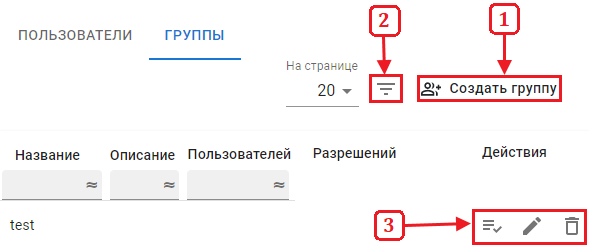
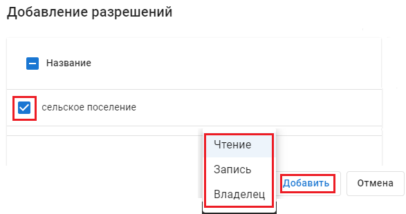
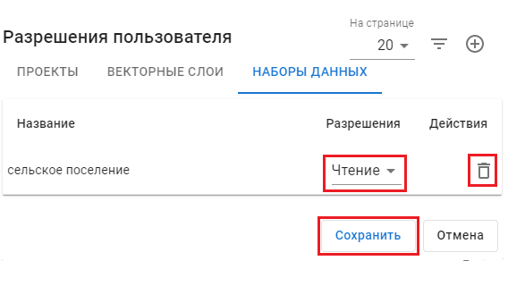

или переименовать
или переименовать  группу используйте соответсвующие функции в поле дополнительных настроек группы.
группу используйте соответсвующие функции в поле дополнительных настроек группы.Управление организацией
Группы
Во вкладке «Группы» отображаются все карточки групп пользователей организации. Вы можете:
• Создать группу (1);
• Включить фильтр групп (2);
• Использовать дополнительные настройки групп (3);

Чтобы выдать группе права на проекты, векторные слои или наборы данных – нажмите «Разрешения»
Права которые выдаюстся группе пользователей выдаются каждому участнику группы.


Чтобы удалить или переименовать группу используйте соответсвующие функции в поле дополнительных настроек группы.
В результате использования перечисленных функций группы пользователей будут иметь один из трёх видов доступа к определённым файлам.